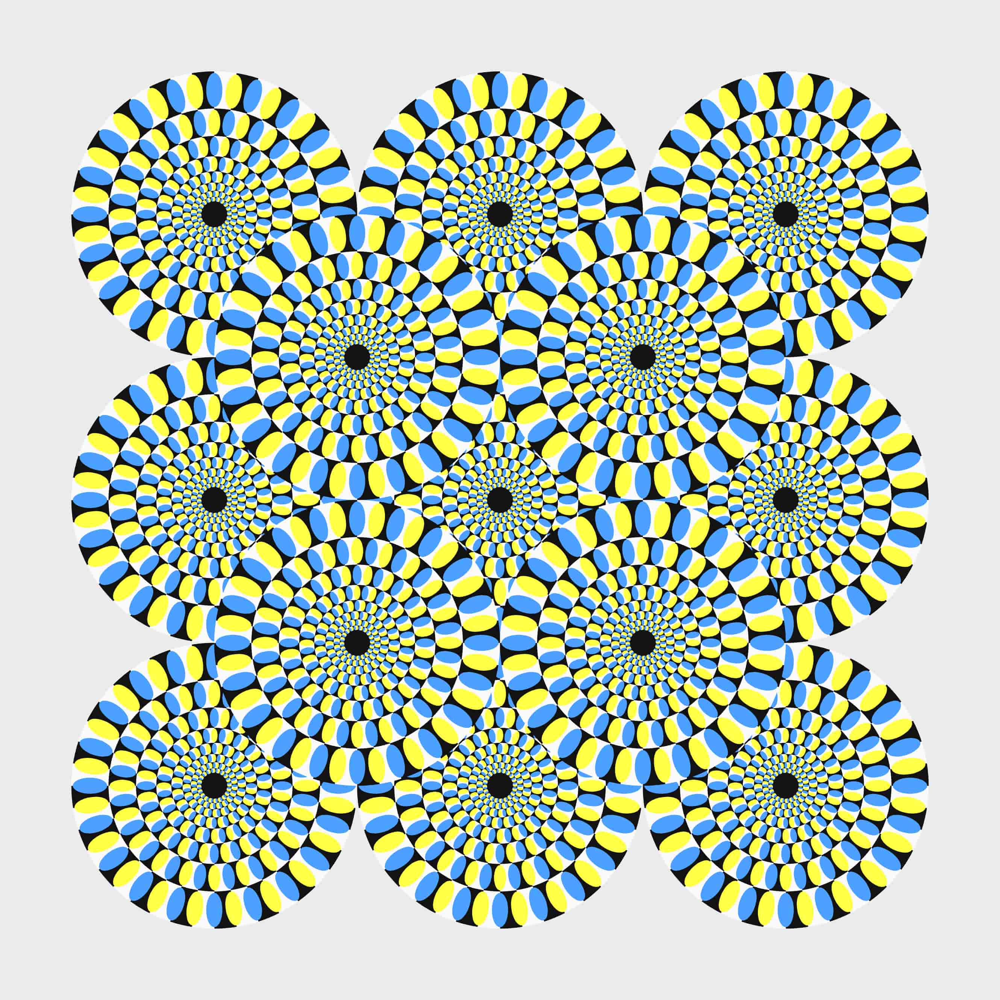

전체 평균 점수
-
-
Visual Perception Test
정지된 이미지가 움직이는 것처럼 보이는 정도를 빠르게 선택하는 착시 설문입니다.
stimuli/anchor.jpg 파일이 있으면 표시됩니다.

Scene 1
정지된 착시 이미지가 얼마나 움직이는 것처럼 느껴지는지 평가하는 설문입니다.
온라인 연결이 성공하면 Worker에 저장됩니다. 실패하면 브라우저에서 JSON/CSV를 내려받습니다.
Visual Response Report
응답 분석 중
전체 평균 점수
-
3개 평가 기준
응답자 특성 요약
응답자 점수 분포
평균권결과 해석